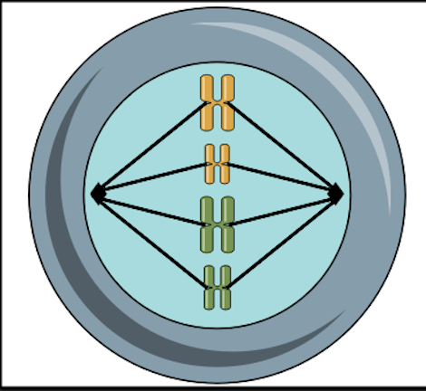

<Metafaza

Despre metafaza:
În metafază, cromozomii sunt aliniați în mod ordonat pe planul de mijloc al celulei, numit planul metafazic sau planul ecuatorial.
Fibrele fusului mitotic se atașează de centromerul fiecărui cromozom, stabilind o legătură între fiecare pereche de cromatide soroase.